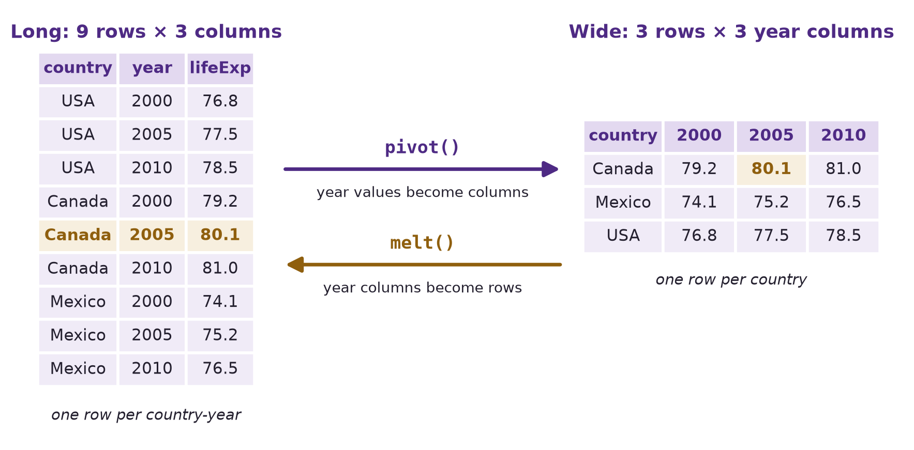
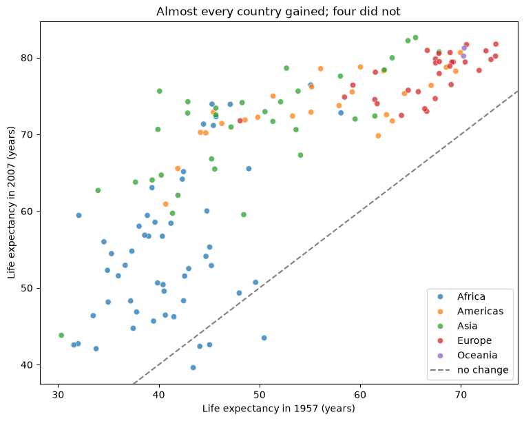
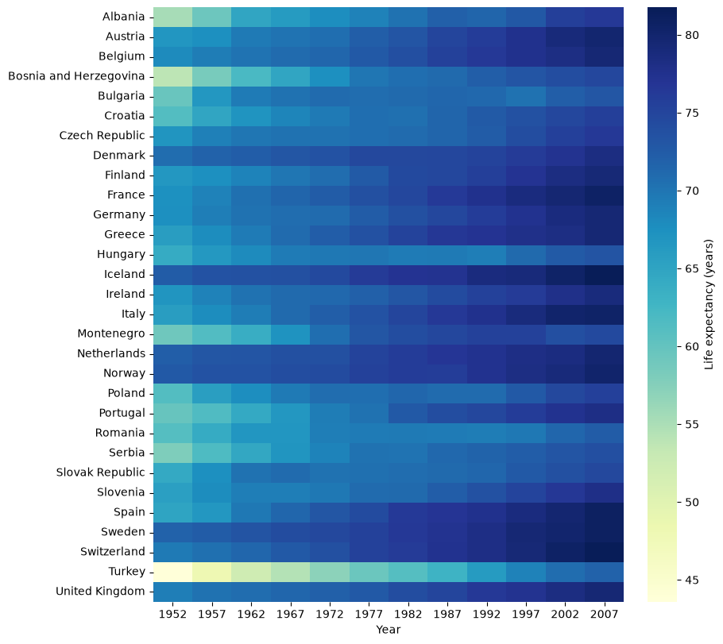
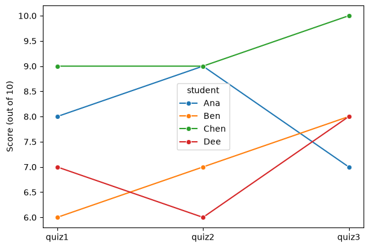

import numpy as np
import pandas as pd
import matplotlib.pyplot as plt
import seaborn as sns13 Data Reshaping
Data Grouping and Aggregation ended with a grouped result indexed by continent and year, and a promise: turning it into a table with one column per year is reshaping. The same information can be laid out with many rows and few columns, or few rows and many columns, and different tasks need different layouts. A plot that colours lines by group wants one layout; a comparison of two years side by side wants the other.
This chapter is about moving data between those layouts without changing a single value. It covers turning a long table wide, turning a wide table long, and the checks that confirm nothing was lost, duplicated, or quietly averaged along the way.
By the end of this chapter you should be able to:
- Tell long format from wide format, and say which one a task needs: plotting by group, comparing columns side by side, or summarizing.
- Turn long data wide with
pivot()when each cell holds one value, withpivot_table()and an explicitaggfuncwhen several rows must be summarized, and withunstack()on a grouped result. - Turn wide data long with
melt()(id_vars,var_name,value_name) and withstack(). - Check a reshape: count rows before and after, check what each
pivot_table()cell combined, and restore column types that reshaping changes.
Complete the practice activity after the worked examples.
13.1 Set Up Your Chapter Files
Download the Data Reshaping practice kit. Extract stat303-data-reshaping inside the chapters folder of your stat303-1 course folder, open stat303-1 in VS Code, and select the course environment. The terminal opens in stat303-1, so move it into the kit with cd chapters and then cd stat303-data-reshaping before you render the activity.
stat303-1/
├── .venv/
├── assignments/
└── chapters/
└── stat303-data-reshaping/
├── data_reshaping_examples.ipynb
├── activity13.ipynb
├── README.md
└── data/
└── gdp_lifeExpectancy.csvRun data_reshaping_examples.ipynb for the lesson and complete activity13.ipynb for your own activity report, with stat303-data-reshaping as the notebook working folder. The data is read with the relative path "data/gdp_lifeExpectancy.csv", so the notebooks find it only when that folder is the working folder.
Environment check: This chapter uses NumPy, pandas, matplotlib, and seaborn, all of which are already in the course environment. If an import fails, check the selected notebook kernel first: it must be the course environment, stat303-1/.venv, as in Project Environments, Packages, and File Paths.
13.2 What reshaping is
Reshaping changes the structure of a table without changing the information in it. Think of rearranging the furniture in a room: every piece is still there, but the layout suits a different purpose. The same values can be arranged in two basic layouts:
- Long format stacks the values into few columns and many rows. Each row is one observation: one country in one year, with its life expectancy.
- Wide format spreads the values across many columns and few rows. Each row is one unit, such as a country, with one column per year.
A small example with three countries and three years shows both. The data starts long:
toy_long = pd.DataFrame({
"country": ["USA", "USA", "USA", "Canada", "Canada", "Canada", "Mexico", "Mexico", "Mexico"],
"year": [2000, 2005, 2010] * 3,
"lifeExp": [76.8, 77.5, 78.5, 79.2, 80.1, 81.0, 74.1, 75.2, 76.5],
})
toy_long| country | year | lifeExp | |
|---|---|---|---|
| 0 | USA | 2000 | 76.8 |
| 1 | USA | 2005 | 77.5 |
| 2 | USA | 2010 | 78.5 |
| 3 | Canada | 2000 | 79.2 |
| 4 | Canada | 2005 | 80.1 |
| 5 | Canada | 2010 | 81.0 |
| 6 | Mexico | 2000 | 74.1 |
| 7 | Mexico | 2005 | 75.2 |
| 8 | Mexico | 2010 | 76.5 |
Nine rows, three columns. pivot(), explained fully below, turns the year values into column headers:
toy_wide = toy_long.pivot(index="country", columns="year", values="lifeExp")
toy_wide| year | 2000 | 2005 | 2010 |
|---|---|---|---|
| country | |||
| Canada | 79.2 | 80.1 | 81.0 |
| Mexico | 74.1 | 75.2 | 76.5 |
| USA | 76.8 | 77.5 | 78.5 |
Three rows, three year columns, and the same nine values. The diagram follows one of them, Canada in 2005, through the reshape in each direction:

pivot() turns the year values into column headers; melt() turns the year columns back into rows. Canada’s 2005 value, 80.1, is highlighted in both.| Format | Rows | Columns | Each row is | Suits |
|---|---|---|---|---|
| Long | 9 | 3 | One country in one year | Plotting by group, groupby(), statistical models |
| Wide | 3 | 3 | One country | Comparing years side by side, reading as a table |
NoteTidy data
You will often see long format described as tidy data: each variable is a column, each observation is a row, and each value is a cell. In the long table, country, year, and lifeExp are each one column, and each row is one observation. In the wide table, the single variable “year” is spread across three column headers. Tidy data is what groupby(), seaborn, and most statistical tools expect, which is why data is so often melted before it is analysed.
Why reshaping matters.
- Different tools need different layouts. Seaborn’s
hue=andcol=, from the visualization chapters, expect long data: one column holding the group. A comparison of 1957 with 2007 is one subtraction in wide data, with each year its own column. - Some calculations are easy in one layout and awkward in the other. Change over time per country is a column difference when wide; a mean per year is a
groupby()when long. - Combining datasets needs matching layouts. Two tables can only be joined row by row once each row means the same thing in both, the subject of the next chapter.
| Direction | From a grouped result | From a table |
|---|---|---|
| Long → wide | unstack() |
pivot(), or pivot_table() to summarize |
| Wide → long | stack() |
melt() |
13.3 The data
The rest of the chapter uses the Gapminder data from Data Grouping and Aggregation: 142 countries every five years from 1952 to 2007. It arrives in long format, one row per country-year:
gdp = pd.read_csv("data/gdp_lifeExpectancy.csv")
print(gdp.shape)
gdp.head()(1704, 6)| country | continent | year | lifeExp | pop | gdpPercap | |
|---|---|---|---|---|---|---|
| 0 | Afghanistan | Asia | 1952 | 28.801 | 8425333 | 779.445314 |
| 1 | Afghanistan | Asia | 1957 | 30.332 | 9240934 | 820.853030 |
| 2 | Afghanistan | Asia | 1962 | 31.997 | 10267083 | 853.100710 |
| 3 | Afghanistan | Asia | 1967 | 34.020 | 11537966 | 836.197138 |
| 4 | Afghanistan | Asia | 1972 | 36.088 | 13079460 | 739.981106 |
13.4 Long to wide
13.4.1 Rearranging values: pivot()
pivot() turns the values of one column into column headers. In the Gapminder data each country has exactly one life expectancy per year, so a country-by-year table has one value for each cell, and pivot() only has to move each value to its new place. index= takes a list, so each row keeps its continent as well as its country:
country_wide = gdp.pivot(index=["continent", "country"], columns="year", values="lifeExp")
print(country_wide.shape)
country_wide.iloc[:3, :6].round(1)(142, 12)| year | 1952 | 1957 | 1962 | 1967 | 1972 | 1977 | |
|---|---|---|---|---|---|---|---|
| continent | country | ||||||
| Africa | Algeria | 43.1 | 45.7 | 48.3 | 51.4 | 54.5 | 58.0 |
| Angola | 30.0 | 32.0 | 34.0 | 36.0 | 37.9 | 39.5 | |
| Benin | 38.2 | 40.4 | 42.6 | 44.9 | 47.0 | 49.2 |
142 rows, one per country, and 12 year columns: 142 × 12 = 1,704 cells, one for each row of gdp. The three arguments name the parts of the result:
| Argument | Becomes | Here |
|---|---|---|
index= |
The row labels | One row per country, labelled with its continent too |
columns= |
The column headers | One column per year |
values= |
What fills the cells | lifeExp |
Nothing is calculated: every number in the table is a number from gdp, moved to a new position. That is what reshaping means.
13.4.2 Why wide: two years side by side
With one row per country and one column per year, comparing any two years is easy. A scatter plot of 1957 against 2007 shows every country’s 50-year change at once. reset_index() turns the two index levels back into columns for seaborn:
plot_data = country_wide.reset_index()
fig, ax = plt.subplots(figsize=(7.5, 6), layout="constrained")
sns.scatterplot(data=plot_data, x=1957, y=2007, hue="continent", alpha=0.75, ax=ax)
ax.axline((40, 40), slope=1, color="gray", linestyle="--", label="no change")
ax.set(xlabel="Life expectancy in 1957 (years)", ylabel="Life expectancy in 2007 (years)",
title="Almost every country gained; four did not")
ax.legend(loc="lower right")
plt.show()
Points above the dashed line gained life expectancy over 50 years; points below it lost. Selecting the countries below the line is one comparison of two columns:
declined = country_wide[country_wide[2007] < country_wide[1957]]
declined[[1957, 2007]].round(1)| year | 1957 | 2007 | |
|---|---|---|---|
| continent | country | ||
| Africa | Lesotho | 45.0 | 42.6 |
| Swaziland | 43.4 | 39.6 | |
| Zambia | 44.1 | 42.4 | |
| Zimbabwe | 50.5 | 43.5 |
Four countries, all in southern Africa — Lesotho, Swaziland, Zambia, and Zimbabwe — had lower life expectancy in 2007 than in 1957. This is the region the HIV/AIDS epidemic of the 1990s and 2000s hit hardest, and it is why Africa’s average stalled in the last chapter’s trend plot. In long format, finding these four would take a filter, a groupby(), and a comparison across rows; in wide format it is one line.
A wide table is also exactly what a heatmap draws, as in Data Visualization I. Europe’s 30 countries, each a row:
europe_wide = country_wide.loc["Europe"]
fig, ax = plt.subplots(figsize=(9, 8), layout="constrained")
sns.heatmap(europe_wide, cmap="YlGnBu", cbar_kws={"label": "Life expectancy (years)"}, ax=ax)
ax.set(xlabel="Year", ylabel="")
plt.show()
country_wide.loc["Europe"] selects one outer level of the two-level index, as in the last chapter, leaving one row per European country. Each row darkens from left to right as life expectancy rises. The lightest rows at the start — Turkey, Bosnia and Herzegovina, and Albania — show where Europe’s lowest life expectancies were in 1952.
TipTurning a wide table on its side
A wide table with many columns can be easier to read turned on its side. .T, the transpose from NumPy Fundamentals, swaps rows and columns: country_wide.T has one row per year and one column per country. Unlike pivot() and melt(), it does not change which values sit together; it only turns the table.
13.4.3 Summarizing while reshaping: pivot_table()
A continent-by-year table is a different request. Each continent-year cell would have to hold every country of that continent in that year — 52 for Africa — and pivot() will not choose among them:
try:
gdp.pivot(index="continent", columns="year", values="lifeExp")
except ValueError as error:
print("ValueError:", error)ValueError: Index contains duplicate entries, cannot reshapeTo fill such a cell, the rows that land in it must be summarized into one number, and only you know which summary you want. pivot_table() takes the same three arguments as pivot(), plus aggfunc=, the function that combines the rows in each cell. Here it is the mean life expectancy of each continent’s countries:
life_pivot = gdp.pivot_table(index="continent", columns="year",
values="lifeExp", aggfunc="mean")
life_pivot.round(1)| year | 1952 | 1957 | 1962 | 1967 | 1972 | 1977 | 1982 | 1987 | 1992 | 1997 | 2002 | 2007 |
|---|---|---|---|---|---|---|---|---|---|---|---|---|
| continent | ||||||||||||
| Africa | 39.1 | 41.3 | 43.3 | 45.3 | 47.5 | 49.6 | 51.6 | 53.3 | 53.6 | 53.6 | 53.3 | 54.8 |
| Americas | 53.3 | 56.0 | 58.4 | 60.4 | 62.4 | 64.4 | 66.2 | 68.1 | 69.6 | 71.2 | 72.4 | 73.6 |
| Asia | 46.3 | 49.3 | 51.6 | 54.7 | 57.3 | 59.6 | 62.6 | 64.9 | 66.5 | 68.0 | 69.2 | 70.7 |
| Europe | 64.4 | 66.7 | 68.5 | 69.7 | 70.8 | 71.9 | 72.8 | 73.6 | 74.4 | 75.5 | 76.7 | 77.6 |
| Oceania | 69.3 | 70.3 | 71.1 | 71.3 | 71.9 | 72.9 | 74.3 | 75.3 | 76.9 | 78.2 | 79.7 | 80.7 |
Five rows and 12 year columns, each cell the mean over a continent’s countries. The fourth argument says how each cell is filled:
| Argument | Becomes | Here |
|---|---|---|
aggfunc= |
How the rows in each cell are combined | The mean |
TipAlways name
aggfunc=
pivot_table() has a default, the mean, so a call without aggfunc= still runs and returns a table. But the code no longer says what the table holds: a reader, or you a week later, cannot tell whether a mean was intended or whether a total was meant and forgotten. Writing aggfunc="mean", aggfunc="sum", aggfunc="median", or aggfunc="count" puts the calculation in the code, where it can be checked. This book names it in every pivot_table() call.
A summary hides how many rows went into it. Asking for aggfunc="count" shows that:
gdp.pivot_table(index="continent", columns="year", values="lifeExp",
aggfunc="count").iloc[:, :4]| year | 1952 | 1957 | 1962 | 1967 |
|---|---|---|---|---|
| continent | ||||
| Africa | 52 | 52 | 52 | 52 |
| Americas | 25 | 25 | 25 | 25 |
| Asia | 33 | 33 | 33 | 33 |
| Europe | 30 | 30 | 30 | 30 |
| Oceania | 2 | 2 | 2 | 2 |
Each Africa cell combines 52 countries, each Oceania cell two. Here the summarizing is intended: each cell is meant to describe a continent.
aggfunc= takes any statistic name, or a lambda, as in agg() from the last chapter. The 90th percentile of life expectancy among each continent’s countries:
gdp.pivot_table(index="continent", columns="year", values="lifeExp",
aggfunc=lambda x: x.quantile(0.9))[[1952, 2007]].round(1)| year | 1952 | 2007 |
|---|---|---|
| continent | ||
| Africa | 45.0 | 71.3 |
| Americas | 65.4 | 78.7 |
| Asia | 60.0 | 79.7 |
| Europe | 71.9 | 80.9 |
| Oceania | 69.4 | 81.1 |
margins=True adds an All row and column. Notice what the All row averages:
life_margins = gdp.pivot_table(index="continent", columns="year", values="lifeExp",
aggfunc="mean", margins=True)
print("All row, 2007:", round(life_margins.loc["All", 2007], 1))
print("mean of the five continent means, 2007:", round(life_pivot[2007].mean(), 1))All row, 2007: 67.0
mean of the five continent means, 2007: 71.5The All row is the mean over all 142 countries, 67.0 years in 2007, not the mean of the five continent means, 71.5. Africa’s 52 countries count 26 times as much as Oceania’s two. It is the same question as in the last chapter — what does this mean average? — and the margin answers it differently from what a reader of the table might assume.
13.4.4 The same table from a grouped result: unstack()
The last chapter built this table in two steps. Grouping by two columns gives a Series with a two-level index: continent on the outer level and year on the inner. unstack() moves the inner level up into the column headers, so each continent becomes one row and each year one column:
life_by_year = gdp.groupby(["continent", "year"])["lifeExp"].mean()
life_wide = life_by_year.unstack()
print(life_wide.equals(life_pivot))Trueequals() confirms the two tables are identical: pivot_table() does the grouping and the unstacking in one call. Use unstack() when you already have a grouped result. Either way, with years as columns, change over time is one subtraction:
(life_wide[2007] - life_wide[1952]).round(1).sort_values()continent
Oceania 11.5
Europe 13.2
Africa 15.7
Americas 20.3
Asia 24.4
dtype: float64Africa gained 15.7 years over the period and Asia 24.4.
13.4.5 Rearrange or summarize? What a duplicate does
The choice between pivot() and pivot_table() matters most when the data has a mistake. Suppose the three-country table had Canada’s 2005 value entered twice, with a typo in the second entry. pd.concat(), from Pandas Fundamentals, adds the extra row; ignore_index=True numbers the rows afresh. pivot() stops at the duplicate:
toy_dup = pd.concat([toy_long,
pd.DataFrame({"country": ["Canada"], "year": [2005], "lifeExp": [80.5]})],
ignore_index=True)
try:
toy_dup.pivot(index="country", columns="year", values="lifeExp")
except ValueError as error:
print("ValueError:", error)ValueError: Index contains duplicate entries, cannot reshapepivot_table() does not stop. It does what it was told, and averages the two rows:
toy_dup.pivot_table(index="country", columns="year", values="lifeExp", aggfunc="mean")| year | 2000 | 2005 | 2010 |
|---|---|---|---|
| country | |||
| Canada | 79.2 | 80.3 | 81.0 |
| Mexico | 74.1 | 75.2 | 76.5 |
| USA | 76.8 | 77.5 | 78.5 |
The table looks complete, and Canada’s 2005 cell says 80.3: a value that appears nowhere in the data, the mean of 80.1 and 80.5. Nothing warns you. The counts do:
toy_dup.pivot_table(index="country", columns="year", values="lifeExp", aggfunc="count")| year | 2000 | 2005 | 2010 |
|---|---|---|---|
| country | |||
| Canada | 1 | 2 | 1 |
| Mexico | 1 | 1 | 1 |
| USA | 1 | 1 | 1 |
One cell holds 2. So the rule is: when each cell should hold one value, use pivot(), which stops at a duplicate. When you mean to summarize, use pivot_table(), name the summary in aggfunc=, and check the counts if any cell should have held one row. A duplicate is the kind of row duplicated(subset=["country", "year"]) from Data Cleaning finds before you reshape.
13.5 Wide to long
13.5.1 melt()
Data often arrives wide because that is how people record and publish it: a spreadsheet with one row per student and one column per quiz, or a public data download — from the World Bank or the Census Bureau, say — with one row per country or state and one column per year. With such data, melt() is usually the first step. melt() turns those columns into rows, the inverse of pivoting. A small gradebook shows the idea:
grades = pd.DataFrame({
"student": ["Ana", "Ben", "Chen", "Dee"],
"quiz1": [8, 6, 9, 7],
"quiz2": [9, 7, 9, 6],
"quiz3": [7, 8, 10, 8],
})
grades| student | quiz1 | quiz2 | quiz3 | |
|---|---|---|---|---|
| 0 | Ana | 8 | 9 | 7 |
| 1 | Ben | 6 | 7 | 8 |
| 2 | Chen | 9 | 9 | 10 |
| 3 | Dee | 7 | 6 | 8 |
grades_long = grades.melt(id_vars="student", var_name="quiz", value_name="score")
grades_long| student | quiz | score | |
|---|---|---|---|
| 0 | Ana | quiz1 | 8 |
| 1 | Ben | quiz1 | 6 |
| 2 | Chen | quiz1 | 9 |
| 3 | Dee | quiz1 | 7 |
| 4 | Ana | quiz2 | 9 |
| 5 | Ben | quiz2 | 7 |
| 6 | Chen | quiz2 | 9 |
| 7 | Dee | quiz2 | 6 |
| 8 | Ana | quiz3 | 7 |
| 9 | Ben | quiz3 | 8 |
| 10 | Chen | quiz3 | 10 |
| 11 | Dee | quiz3 | 8 |
Four students × three quizzes = 12 rows. The three arguments say what to keep and what to call the new columns:
| Argument | Meaning | Here |
|---|---|---|
id_vars= |
Columns that identify a row and stay as they are | student |
var_name= |
Name for the new column that holds the old column headers | quiz |
value_name= |
Name for the new column that holds the values | score |
Every column not listed in id_vars is melted; value_vars= limits the melt to some of them. In long form, the questions a gradebook raises become one familiar line each — the mean score on each quiz is a groupby():
grades_long.groupby("quiz")["score"].mean()quiz
quiz1 7.50
quiz2 7.75
quiz3 8.25
Name: score, dtype: float64Long format is also what seaborn’s hue= needs, here to draw one line per student:
fig, ax = plt.subplots(figsize=(6, 4), layout="constrained")
sns.lineplot(data=grades_long, x="quiz", y="score", hue="student", marker="o", ax=ax)
ax.set(xlabel="", ylabel="Score (out of 10)")
plt.show()
13.5.2 Melting back, and checking the result
The country-by-year table melts back into the original long layout. reset_index() first turns continent and country into ordinary columns, so they can be id_vars:
life_long = country_wide.reset_index().melt(id_vars=["continent", "country"],
var_name="year", value_name="lifeExp")
print(life_long.shape)
print(life_long.dtypes)(1704, 4)
continent str
country str
year object
lifeExp float64
dtype: object142 countries × 12 years = 1,704 rows, matching the original data. But year came back as object, not as integers: the year labels passed through column headers, where they were stored alongside the text headers continent and country. A reshape can change a column’s type without any warning, so check dtypes afterwards and restore it:
life_long["year"] = life_long["year"].astype(int)
original = gdp.sort_values(["country", "year"]).reset_index(drop=True)
restored = life_long.sort_values(["country", "year"]).reset_index(drop=True)
print("same years:", (original["year"] == restored["year"]).all())
print("same values:", np.allclose(original["lifeExp"], restored["lifeExp"]))same years: True
same values: TrueSorted the same way, the melted table matches the original row for row: long to wide and back again lost nothing. This round-trip check — reshape, reshape back, compare — is the surest way to confirm a reshape did only what you meant.
13.5.3 stack()
stack() is the counterpart of unstack(): it moves the column headers down into the inner level of the row index, turning the continent-by-year table back into a Series:
life_stacked = life_wide.stack()
print(life_stacked.shape)
life_stacked.head()(60,)continent year
Africa 1952 39.135500
1957 41.266346
1962 43.319442
1967 45.334538
1972 47.450942
dtype: float6460 values again, indexed by continent and year: exactly the grouped result the section started from. Use stack() and unstack() when the data already has a two-level index, as grouped results do, and melt(), pivot(), and pivot_table() when it has ordinary columns.
13.6 Summary Cheat Sheet
| Goal | Code |
|---|---|
| Long table to wide, one value per cell | df.pivot(index="a", columns="b", values="v") |
| Long table to wide, summarizing each cell | df.pivot_table(index="a", columns="b", values="v", aggfunc="mean") |
| Grouped result to wide | df.groupby(["a", "b"])["v"].mean().unstack() |
| Several row labels | pivot(index=["a", "c"], ...), and the same in pivot_table() |
| See how many rows each cell combined | pivot_table(..., aggfunc="count") |
| Your own statistic | aggfunc=lambda x: x.quantile(0.9) |
| Totals or overall means | pivot_table(..., margins=True) |
| Wide table to long | df.melt(id_vars="id", var_name="name", value_name="value") |
| Melt only some columns | melt(..., value_vars=["c1", "c2"]) |
| Wide with a two-level index to long | wide.stack() |
| Index levels back to columns | reset_index() |
| Restore a type changed by reshaping | df["year"] = df["year"].astype(int) |
| Swap rows and columns | df.T |
The rule to remember: after every reshape, check the number of rows, what each cell combined, and the column types, and name aggfunc= whenever a cell summarizes several rows.
13.7 Practice Activity: Long, Wide, and Back
Goal: Reshape one dataset in both directions, use each layout for what it does best, and check that nothing was lost or quietly averaged.
File: activity13.ipynb from the practice kit.
Submit: activity13.html through the final upload question in the Data Reshaping Canvas quiz.
This section contains the complete activity instructions. The starter loads the data and supplies spaces to record your work. Open activity13.ipynb from the folder prepared in Set Up Your Chapter Files, using the same project environment. The worked examples above are preparation, not additional submission requirements.
The starter loads gdp from the kit’s data/ folder and builds a small wide table, rainfall, with one row per city and one column per month.
A. Long to Wide, Two Ways
- Replace
Your Namein the opening Raw cell’sauthorfield. Run the setup cell; it must report the shapes(1704, 6)and(4, 5). - Build a continent-by-year table of median
gdpPercaptwice: once withgroupby()andunstack(), once withpivot_table()andaggfunc="median". Show that the two are identical withequals(). - Say in one sentence how many countries went into the Africa cells, and how you checked.
B. Compare Two Years
- Build a country-by-year table of
gdpPercapwithpivot()and compute each country’s ratio of 2007 to 1957 GDP per capita. - Show the five countries with the largest ratio, and report how many countries had lower GDP per capita in 2007 than in 1957.
C. Wide to Long, and Check
- Melt
rainfallinto a long table with columnscity,month, andrainfall_mm. Confirm the number of rows is the number of cities times the number of months. - Use the long table to compute mean rainfall per month with
groupby(), and draw one line per city with seaborn.
D. When a Pivot Summarizes
- Build a continent-by-year table of
popwithaggfunc="sum", and another with the defaultaggfunc. - Say which table answers “how many people lived in each continent?”, and what the other one actually shows.
Render and Submit
Restart the kernel, run all cells in order, resolve unexpected errors, and save. Include your outputs and explanations for A–D, and a short Markdown completion note. From stat303-data-reshaping in the terminal, run:
quarto render activity13.ipynb --to htmlFollow the Quarto refresher: inspect the HTML and a copy opened outside the project folder, and confirm that every output appears and your name is on the report. Upload only activity13.html to the Data Reshaping Canvas quiz; keep your notebook locally.
HTML grading (16 points): both wide tables, the equals() check, and the count explanation (4); the country-by-year table, the five largest ratios, and the count of declines (4); the melted table with its row check, the monthly means, and the plot (4); both population tables and the explanation (3); name, readable report, and completion note (1).
13.8 Extended Practice
These longer exercises are additional practice, not requirements for the Canvas quiz. Work in a separate notebook beside your activity and load the data the way the chapter does. Include your code, outputs, and explanations.
13.8.1 Several Values at Once
Pass two columns to values=, as in pivot_table(index="continent", columns="year", values=["lifeExp", "gdpPercap"], aggfunc="mean"). The result has two-level column headers. Select the gdpPercap block, then try stack() on the result. Which layout would you hand to a reader, and which to seaborn?
13.8.2 A Heatmap of Change
Build the country-by-year table of lifeExp for Africa, subtract the 1952 column from every column, and draw the result as a heatmap with a diverging colour map centred at 0. Which countries stand out, and in which decades?
13.8.3 Melt Only Part of a Table
Starting from the country-by-year table, melt only the columns 1952, 1977, and 2007 with value_vars=. How many rows does the result have, and what happened to the other years?
13.8.4 Round Trip on GDP
Repeat the chapter’s round-trip check for gdpPercap: pivot to wide, melt back, restore the type, and confirm with np.allclose() that every value matches the original.
13.9 Before You Move On
The habit to carry forward is checking a reshape. Every tool in this chapter can return a perfectly shaped table that is wrong: pivot_table() averages a duplicate without saying so, margins=True averages over rows rather than groups, and melt() can bring numbers back as text. Count the rows, look at what each cell combined, and check the types — or reshape back and compare.
Choose pivot() when each cell should hold one value, so a duplicate stops it, and pivot_table() with a named aggfunc= when you mean to summarize.
The other habit is choosing the layout by the task. Long data suits groupby(), seaborn, and models; wide data suits comparisons between columns and tables for a reader.
For any reshape you make, you should be able to answer five questions:
- Is the starting table long or wide, and what is one row?
- What will one row and one column be after the reshape?
- Did any cell combine more than one value, and if so, how?
- Does the row count after the reshape match what you expected?
- Did any column change type?
Continue to Combining Datasets, where tables in matching layouts are joined together.
References: pandas: reshaping and pivot tables, DataFrame.pivot, DataFrame.pivot_table, DataFrame.melt, DataFrame.stack, DataFrame.unstack, and DataFrame.T.